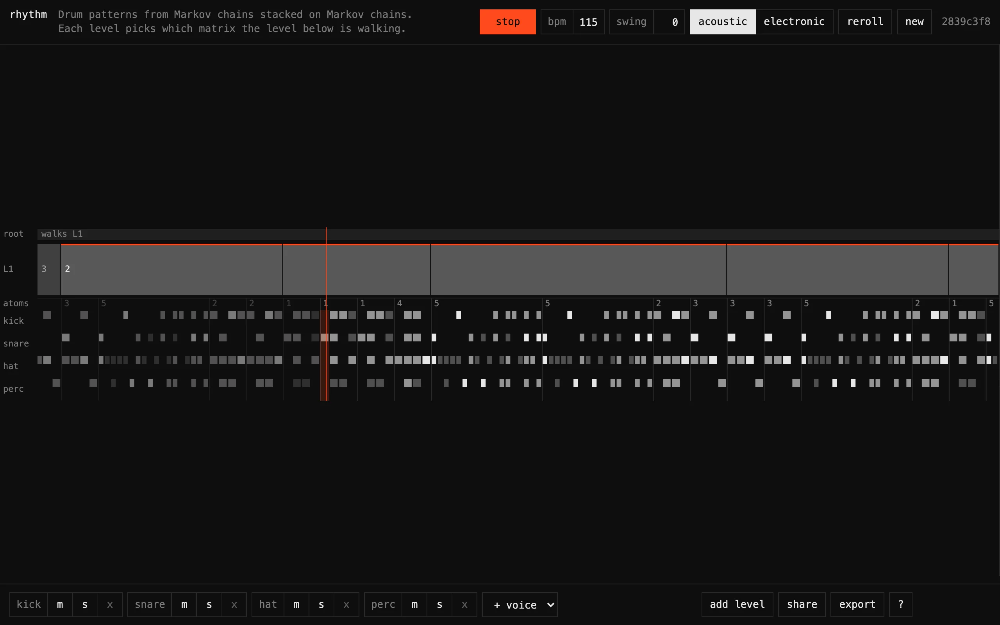

Rhythm plays drum patterns that come out of a stack of Markov chains. The bottom of the stack is a pool of short patterns I call atoms. An atom is one to four beats long, split into 2, 3, 4 or 6 steps per beat, and holds one 4x4 transition matrix per voice over four hit strengths: rest, ghost, normal, accent. Above the atoms sits a level of matrices that pick which atom plays next. Above that, a root matrix picks which of those matrices is being walked. Adding a level turns the root into one of four nodes in a new top level, with a new root over them, up to four levels deep.
The reason to stack is that a piece gets structure at more than one time scale. The atom chains decide whether the snare ghosts into the backbeat. The level above decides that the next bar sounds like the last one about 30 percent of the time, since a freshly generated atom matrix has 0.3 on its diagonal and squared noise elsewhere, so one or two other atoms dominate each row. The root, with 0.5 on its diagonal and a dwell of four steps, holds a mood for a few bars and then drifts. Nothing in it knows anything about drumming beyond a per-voice template. Kicks rest 60 to 82 percent of the time depending on what came before, hats rest about one step in six, and every template cell gets 35 percent multiplicative jitter so two pieces with the same voices don't share a feel. Swing delays the odd steps by up to a third of a step, on even subdivisions only, so at full swing straight eighths land as triplets.
Draws indexed by time
The walk has no random stream. Every draw is a hash of (seed, t, level), where t is the index of the atom in the sequence and level 0 is the atom draw itself. So the walk state at time t is a pure function of the piece and t, and there is no generator state to keep in sync between the player, the timeline and the WAV export. The player commits whole atoms to the audio clock once they fall inside a 150 ms lookahead, checked every 25 ms, and everything past that head is recomputed from the head's state whenever the piece changes.
That is what makes editing while it plays behave. Bump one cell of a matrix and the rest of its row rescales around it, the committed atoms stay where they are, and the future re-derives from the same draws. Any step that never consults the edited row lands exactly where it would have. Adding a second level draws from (seed, t, 2) for the new level and leaves the draws below untouched, and since the old root becomes node 0 of the new level, the piece keeps playing what it was playing until the new root moves it. With a stream PRNG the same edit would reshuffle everything downstream of it.
Atoms render differently. An atom has its own 32-bit seed, and its hits come from an sfc32 stream seeded by that and the voice index, one draw per step, so an atom is a fixed motif until its seed or matrices change. Reroll reseeds all six atoms and keeps every matrix, which swaps the material and keeps the form.
Rows that sum to 255
The whole piece lives in the URL fragment: a version byte, the seed, bpm, swing, kit, the voice list, then each atom's seed and shape and 16 bytes per voice for its chain, then each level's dwell and matrices, then the root. Every matrix row is quantized to bytes, deflated, and base64url-encoded. A default piece is 591 bytes before compression and 795 characters after. Three levels deep it's 942 characters, and a test holds the line at 1,200.
Quantizing a probability row to bytes has a trap. Rounding each cell on its own gives rows that sum to 254 or 256, and a row that dequantizes to something over 254 and requantizes can drift a cell on every save. I scale the row to 255, floor every cell, and hand the leftover units to the cells with the largest fractional parts. Every row then sums to exactly 255, and dequantize then quantize is a fixed point. The codec test round-trips a piece twice and asserts the second pass is byte-identical to the first. A row like [0.001, 0, 0] comes out as [255, 0, 0], so a live row can't quantize to all zeros.
The caveat is that the fixed point only holds after the first quantization. The piece you hear first was generated in floats and plays on float matrices, while the URL carries 8-bit rows. Someone opening the link gets rows that differ from yours by up to 1/255 per cell, driven by the same hashed draws. Most draws land far from a boundary and agree. One that lands inside that sliver picks a different atom, and from that step on the two walks are different walks. The same goes for the atom chains, so a motif can differ by a hit. I could quantize on creation and close the gap, and haven't yet. Share links store the same payload in KV under a six-character slug, after the Worker has decoded it to check it's a real piece, at most 20 per minute per address.